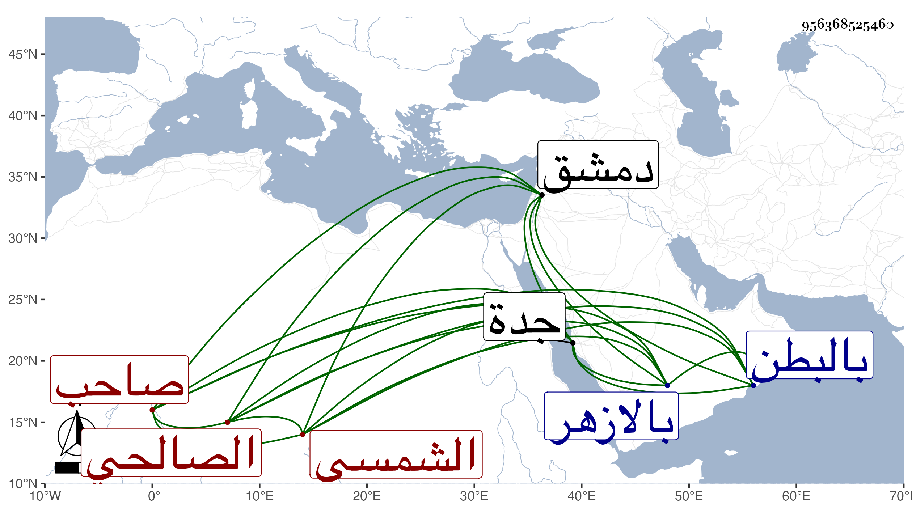

0902Sakhawi.DawLamic.ITO20230111-ara1.EIS1600.956368525460
Biography ID: 956368525460
144
خديجة ابنة أمير حاج بن البيسري نسبة للامير بدر الدين الشمسي الصالحي صاحب الدار الكبيرة بين القصرين المعروفة بالبيبرسية وأحد الأمراء المشهورين بل وممن ذكر للسلطنة والمتوفي سنة ثمان وتسعين وستمائة . كانت قد تزوجت ثالث زوج بالنجم بن حجي وذبح بدمشق عندها ثم تزوجها بعده البدر ابن مزهر واستولدها الزيني أبا بكر ولم يلبث أن مات فتزوجها سعد الدين إبراهيم ابن المرة ناظر جدة واستولدها ايضا وحجت معه وجاورت ومات معها ثم بعد دهر تزوجها العلم البلقيني ومات أيضا معها وكانت أحد الاسباب في اقامته في المنصب الايام الاينالية لمزيد اختصاصها بخوند العظمى ، ثم لم تتزوج بعده بل أقامت في ظل ولدها ورأت من العز به ما يفوق الوصف وكان زائد البر بها وحجت معه تلك الحجة الرجبية الهائلة وانتفع الناس بشفاعتها وسفارتها عنده وعند غيره وكثر المنتمى اليها من العجائز والفقراء ونحوهما وابتنت رباطا للارامل إلى غيره من الدور والقرب ، وكانت تنطوي على دين ورياسة وابعاد لمن يذكر بفحش . ماتت بالبطن في عصر يوم الخميس سادس عشر رمضان سنة ثمان وسبعين عن نحو السبعين فأكثر بعد أن توعكت نحو ثلاثة أشهر وصرعت ، وصلى عليها من الغد بسبيل المؤمنى في مشهد حافل جدا لم يتيسر للسلطان شهوده مع حرصه عليه فانه هو الآمر بالصلاة عليها هناك لذلك ولكن قيل له استقر الحال على الصلاة عليها بالازهر وصادف ابطاؤها فأخذ في التأهب للجمعة وجئ بالجنازة حينئذ فما تيسر حضوره ، ودفنت بتربة ولدها بالقرب من الشيخ عبد الله المنوفي وكانت هناك أوقات طيبة ومشاهد حسنة ورثاها بعض الشعراء بما كتبته في موضع آخر رحمها الله وإيانا .
